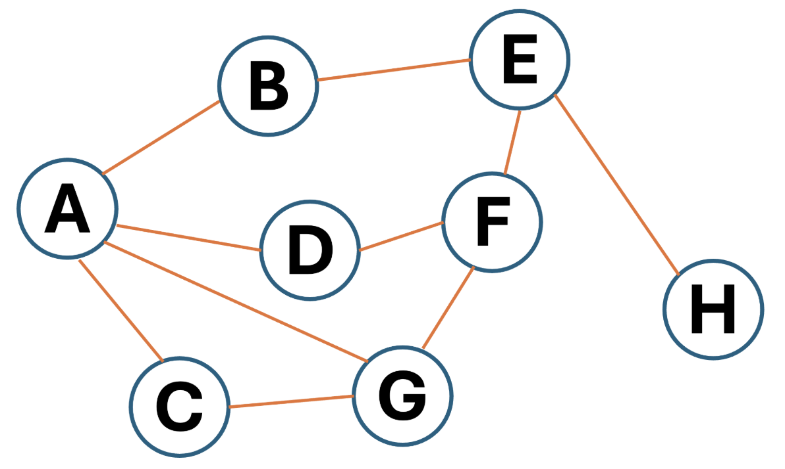
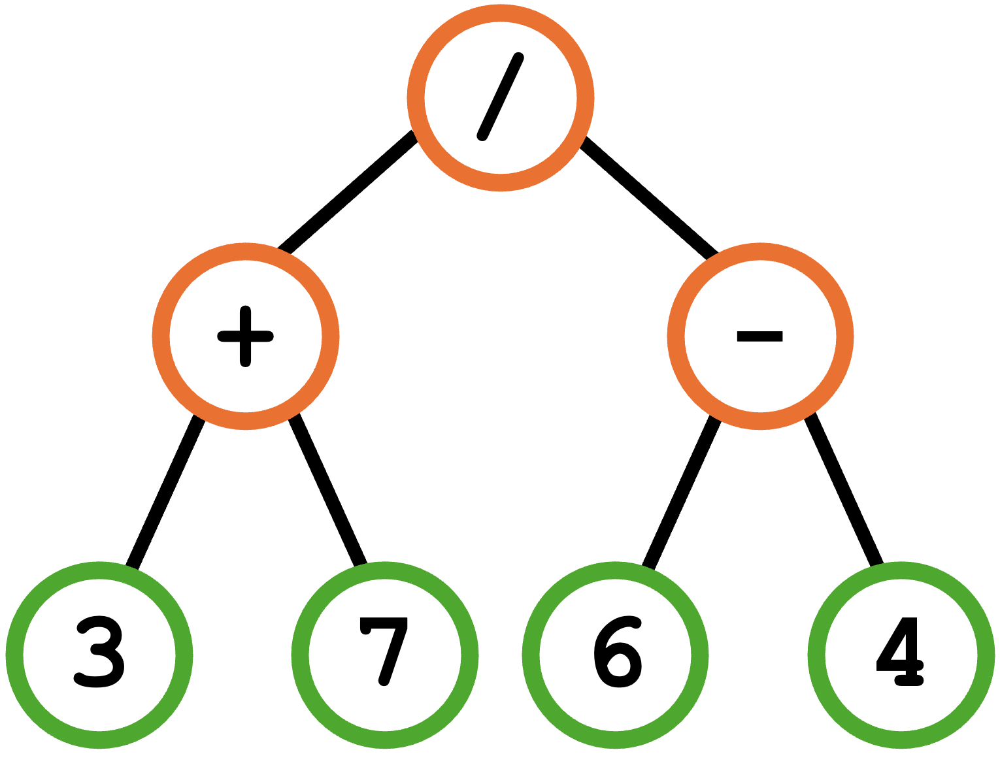

Diagram 1
Diagram 1

 Diagram 2
Diagram 2

3 7 + 6 4 - /
The expression in Reverse Polish Notation
(7 * 2 + 1)
* (100 / 4 + 3)
into Reverse Polish Notation.
7 2 * 1 +
100 4 / 3 + *
["Apples", "Bananas",
"Cherries", "Grapes",
"Kiwis", "Lemons",
"Mangoes", "Oranges",
"Pears", "Pineapples",
"Plums", "Strawberries"]
, "Blueberries" (which is not in the list).
"Lemons", "Cherries",
"Apples", "Bananas")